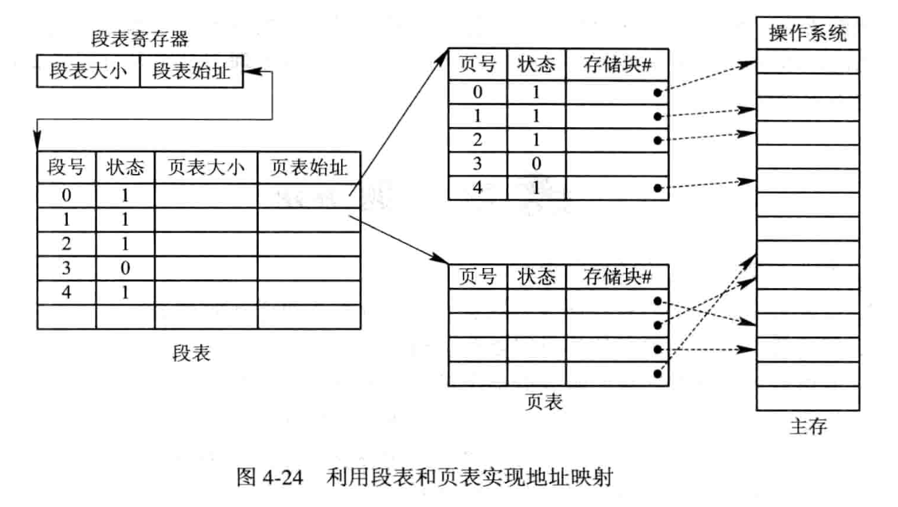

存储器管理 [存储器管理][edit]
存储器管理 [存储器管理][edit]
连续分配⽅式是最早出现的⼀种存储器分配⽅式, 曾被⼴泛应⽤于上世纪 60~80 年代的 OS 中, 该分配⽅式为⼀个⽤户程序分配⼀个连续的内存空间, 即程序中代码或数据的逻辑地址相邻, 体现在内存空间分配时物理地址的相邻. 连续分配⽅式可分为四类: 单⼀连续分配、 固定分区分配、 动态分区分配以及动态可重定位分区分配算法四种⽅式. 可以理解成 动态分区分配 的紧凑化版本. 在分配内存时, 从链⾸开始顺序查找, 直⾄找到⼀个⼤⼩能满⾜要求的空闲分区为⽌. 然后再按照作业的⼤⼩, 从该分区中划出⼀块内存空间, 分配给请求者, 余下的空闲分区仍留在空闲链中. 若从链⾸直⾄链尾都不能找到⼀个能满⾜要求的分区, 则表明系统中已没有⾜够⼤的内存分配给该进程, 内存分配失败, 返回. 该算法倾向于优先利⽤内存中低址部分的空闲分区, 从⽽ 保留了⾼址部分的⼤空闲区. 这为以后到达的⼤作业分配⼤的内存空间创造了条件. 其缺点是低址部分不断被划分, 会留下许多难以利⽤的、很⼩的空闲分区, 称为碎⽚.⽽每次查找又都是 从低址部分开始 的, 这⽆疑又会 增加查找可⽤空闲分区时的开销. $\textbf{Example.}$ 所谓 “最佳” 是指, 每次为作业分配内存时, 总是把能满⾜要求、 又是最⼩的空闲分区分配给作业, 避免 “⼤材⼩⽤”. 为了加速寻找, 该算法要求将所有的空闲分区按其容量以从⼩到⼤的顺序形成⼀空闲分区链. 这样, 第⼀次找到的能满⾜要求的空闲区必然是最佳的. 孤⽴地看, 最佳适应算法似乎是最佳的, 然⽽在宏观上却不⼀定. 因为每次分配后所切割下来的 剩余部分总是最⼩的, 这样, 在存储器中会 留下许多难以利⽤的碎⽚. $\textbf{Example.}$ 最坏适应分配算法选择空闲分区的策略正好与最佳适应算法相反: 它在扫描整个空闲分区表或链表时, 总是挑选⼀个最⼤的空闲区, 从中分割⼀部分存储空间给作业使⽤. 它的优点是可使剩下的空闲区不⾄于太⼩, 产⽣碎⽚的可能性最⼩, 对中、⼩作业有利, 但 可能导致缺乏大的空闲区. 同时, 最坏适应分配算法查找效率很⾼, 该算法要求, 将所有的空闲分区,按其容量以从⼤到⼩的顺序形成⼀空闲分区链, 查找时, 只要看第⼀个分区能否满⾜作业要求即可. $\textbf{Example.}$ 为避免低址部分留下许多很⼩的空闲分区, 以及減少查找可⽤空闲分区的开销, 循环⾸次适应算法在为进程分配内存空间时, 不再是每次都从链⾸开始查找,⽽是从上次找到的空闲分区的下⼀个空闲分区开始查找, 直⾄找到⼀个能满⾜要求的空闲分区, 从中划出⼀块与请求⼤⼩相等的内存空间分配给作业. 为实现该算法, 应设置⼀起始查寻指针,⽤于指⽰下⼀次起始查寻的空闲分区, 并采⽤循环查找⽅式, 即如果最后⼀个 (链尾) 空闲分区的⼤⼩仍不能满⾜要求, 则应返回到第⼀个空闲分区, ⽐较其⼤⼩是否满⾜要求. 找到后, 应调整起始查寻指针. 该算法能使内存中的 空闲分区分布得更均匀, 从⽽ 减少了查找空闲分区时的开销, 但这样会 缺乏⼤的空闲分区. $\textbf{Example.}$ 用可变分区方式管理内存时, 假定内存中按地址顺序依次有 5 个空闲区, 大小为 32、 10、 5、 228、 100, 单位为 KB, 现有 5 个作业, 各需内存 11、 10、 108、 28、 115, 若采用 首次适用分配算法 能全部装入吗? 怎样才能装入? 因为失败的原因是缺乏大分区, 所以我们考虑 最佳适应算法. 如下所示. $\gdef\str#1{{\footnotesize #1}}$
$\gdef\hint#1{{\color{gray}{\str{#1}}}}$ 在该⽅式中, 将 ⽤户程序的地址空间 分为若⼲个固定⼤⼩的区域, 称 “页” [page] 或 “页⾯”. 典型的页⾯⼤⼩为 1KB. 相应地, 也 将内存空间 分为若⼲个物理块 [block] 或页框 [frame], 页和块的⼤⼩相同. 这样可将⽤户程序的任⼀页放⼊任⼀物理块中, 实现了离散分配. $$
\hint{页号} ~ P = \bigg\lfloor \frac{\hint{逻辑地址} ~ A}{\hint{页⾯⼤⼩} ~ L} \bigg\rfloor, \quad
\hint{页内地址} ~ d = \hint{逻辑地址} ~ A \mod \hint{页⾯⼤⼩} ~ L
$$ $\textbf{Example.}$ 逻辑地址为 2500, 每页大小为 1KB, 页表如下. 求物理地址. $P = \lfloor \frac{2500}{1 ~\text{K}} \rfloor = 2, d = 2500 \mod 1 ~\text{KB} = 452$ $ \str{物理地址} = \hint{块号} ~ 8 \times \hint{页表长度} ~ 1 ~\text{K} + 452 = 8644$ $\textbf{Remark.}$ 为了提⾼地址变换速度, 可在地址变换机构中增设⼀个具有并⾏查寻能⼒的特⾼速缓冲寄存器, 又称为 “联想寄存器” [Associative Memory], 或称为 “快表”. $\gdef\str#1{{\footnotesize #1}}$
$\gdef\hint#1{{\color{gray}{\str{#1}}}}$ 这是为了满⾜⽤户要求⽽形成的⼀种存储管理⽅式. 它把⽤户程序的地址空间分为若⼲个⼤⼩不同的段, 每段可定义⼀组相对完整的信息. 在存储器分配时, 以段为单位, 这些段在内存中可以不相邻接, 所以也同样实现了离散分配. 作业的逻辑地址按照 逻辑意义 划分成段 段的长度由相应的逻辑信息组的长度决定, 因此各段的长度并不相等. 整个作业的地址空间由于被分成多个段, 所以呈现出⼆维特性, 亦即, 每个段既包含了⼀部分地址空间, 又标识了逻辑关系. 其逻辑地址由段号 (段名) 和段内地址所组成. 逻辑地址 $[\hint{段号} ~ a, \hint{段内地址} ~ f]$ 的物理地址是 $\hint{段号对应的基址} ~ b + \hint{段内地址} ~ f$. 若 $ \hint{段内地址} ~ f > \hint{段长} ~ \ell$, 则段长越界, 非法. 这是分页和分段两种存储管理⽅式相结合的产物. 它同时具有两者的优点, 是⽬前应⽤较⼴泛的⼀种存储管理⽅式. 分页系统以页⾯作为内存分配的基本单位, 能有效地提⾼内存利⽤率,⽽分段系统以段作为内存分配的基本单位, 它能够更好地满⾜⽤户多⽅⾯的需要. 如果能对两种存储管理⽅式 “各取所长”, 则可形成⼀种新的存储器管理⽅式—段页式存储管理⽅式. 这种新的系统既具有分段系统的便于实现、 分段可共享、 易于保护、 可动态链接等⼀系列优点,又能像分页系统那样, 很好地解决内存的外部碎⽚问题. 段页式系统的基本原理是分段和分页原理的结合, 即 先将⽤户程序分成若⼲个段, 再把每个段分成若⼲个页, 并为每⼀个段赋予⼀个段名.  在段页式系统中, 为了实现从逻辑地址到物理地址的变换, 系统中需要同时配置段表和页表. 段表的内容与分段系统略有不同, 它不再是内存始址和段长, 而是页表始址和页表长度. 上图示出了利用段表和页表进行从用户地址空间到物理 (内存) 空间的映射. 分页和分段的相同点: 分页和分段的不同点:存储器的层次结构 [存储器的层次结构][edit]
多级存储器结构 CPU 寄存器 寄存器 主存 高速缓存, 主存, 磁盘缓存 [ buffer]辅存 磁盘, 可移动存储介质
缓存 速度匹配 物理 高速缓存 CPU $\lrarr$ 主存 是 磁盘缓存 主存 $\lrarr$ 磁盘 否, 是主存的一部分区域 程序的装入和链接 [装入和链接][edit]
0 开始编址, 也称相对地址.装入方式 装入时机 地址变化 优点 缺点 环境 绝对装入⽅式 编程时 编译期 装入简单 依赖硬件结构 单道程序环境 可重定位装入⽅式 运行前 装入前静态重定位 不依赖硬件 必须有连续空间 多道程序环境 动态运⾏时的装入⽅式 运行中 运行时完成 不需要连续空间 OS 开销大 多道程序环境
链接方式 链接时机 优点 静态链接 事先进⾏链接, 不再拆开 稳定 装入时动态链接 装入内存时, 边装入边链接 便于修改和更新, 便于实现对⽬标模块的共享 运⾏时动态链接 对某些模块的链接推迟到程序执⾏时才进⾏ 加快程序的装入过程, 节省⼤量的内存空间 连续分配存储管理⽅式 [连续分配存储管理][edit]
动态可重定位分区分配 [动态可重定位分区][edit]
首次适应算法 [首次适应算法][edit]
请求队列 ⾸次适应算法 初始 10 4 20 18 7 9 12 15 12KB 10 4 8 $~$ 18 7 9 12 15 10KB 0 $~$ 4 8 $~$ 18 7 9 12 15 9KB 0 $~$ 4 8 $~$ 9 $~$ 7 9 12 15 最佳适应算法 [最佳适应算法][edit]
请求队列 最佳适应算法 初始 10 4 20 18 7 9 12 15 12KB 10 4 20 18 7 9 0 $~$ 15 10KB 0 $~$ 4 20 18 7 9 0 $~$ 15 9KB 0 $~$ 4 20 18 7 0 0 $~$ 15 最坏适应算法 [最坏适应算法][edit]
请求队列 最坏适应算法 初始 10 4 20 18 7 9 12 15 12KB 10 4 8 $~$ 18 7 9 12 15 10KB 10 4 8 $~$ 8 $~$ 7 9 12 15 9KB 10 4 8 $~$ 8 $~$ 7 9 12 6 循环首次适应算法 [循环⾸次适应算法][edit]
请求队列 循环首次适应算法 初始 10 4 20 18 7 9 12 15 12KB 10 4 8 $~$ 18 7 9 12 15 10KB 10 4 8 $~$ 8 $~$ 7 9 12 15 9KB 10 4 8 $~$ 8 $~$ 7 0 12 15 Example. 连续分配存储管理 [连续分配存储管理⽅式-例][edit]
请求队列 ⾸次适应算法 初始 32 10 5 228 100 11 21 10 5 228 100 10 11 10 5 228 100 108 11 10 5 120 100 28 11 10 5 92 100 115 失败 请求队列 最佳适应算法 初始 32 10 5 228 100 11 21 10 5 228 100 10 21 0 5 228 100 108 21 0 5 120 100 28 21 0 5 120 72 115 21 0 5 5 72 离散分配 [离散分配][edit]
分页存储管理⽅式 [分页存储管理⽅式][edit]
页号 块号 0 2 1 3 2 8 

基本分页存储管理的缺点: 将用户作业物理划分页
分段存储管理⽅式 [分段存储管理⽅式][edit]

段号 基址 段长 $n$ $b$ $\ell$ 段页式存储管理⽅式 [段页式存储管理⽅式][edit]